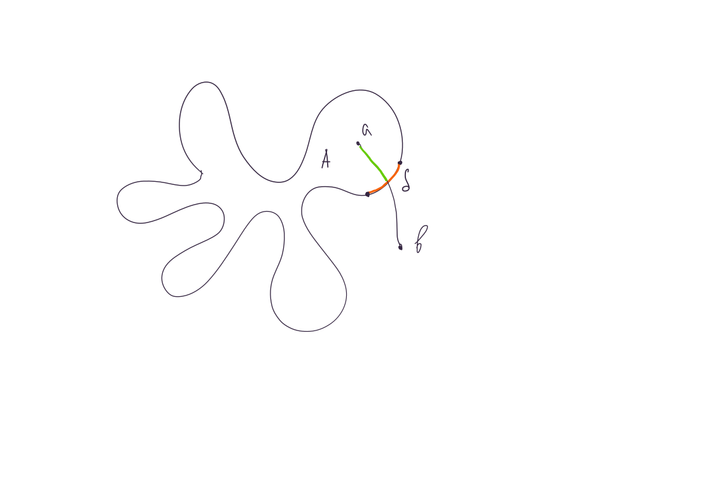

Определение: Пусть
\(X\) – топологическое пространство.
Пусть \(\gamma: [a, b] \to X\) –
непрерывная кривая.
\(\gamma\) –
замкнутая, если \(\gamma(a) =
\gamma(b)\).
\(\gamma\) –
незамкнутая, если \(\gamma(a) \ne
\gamma(b)\).
Определение: Пусть
\(X\) – топологическое пространство.
Пусть \(\gamma: [a, b] \to X\) –
непрерывная кривая.
Пусть \(\gamma\) незамкнутая
кривая. \(\gamma\) – кривая без
самопересечений, если ее образ \(\gamma([a, b])\) – взаимнооднозначен с
\([a, b]\).
Пусть \(\gamma\) замкнутая кривая.
\(\gamma\) – кривая без
самопересечений, если только для \(a\) и \(b\) выполнено \(\gamma(a) = \gamma(b)\).
Теорема: (теорема Жордана) Пусть \(\gamma: [a, b] \to \mathbb{R}^2\) – непрерывная кривая без самопересечений. Пусть \(\Gamma = \gamma([a, b])\) – образ отображения \(\gamma\) и \(\Omega = \mathbb{R}^2 \setminus \Gamma\). Тогда
Определение: Пусть \(a, b \in \mathbb{R}^n, \,\,\,\, n > 1\). Множество \(\{a + (b - a)\cdot t, \,\,\,\, t \in [0, 1]\}\) – отрезок.
Определение:
Ломаная \(L\)
в \(\mathbb{R}^n\) – это
последовательность точек \(\{a_i \in
\mathbb{R}\}_{i = 0}^m\) и последовательность отрезков \(\{[a_i, a_{i + 1}]\}_{i = 0}^{m -
1}\).
Если \(a_0 = a_m\), то
ломаная – замкнутая, иначе ломаная – незамкнутая.
Определение: Пусть
\(L\) – незамкнутая
ломаная. \(L\) – ломаная без
самопересечений, если никакие два отрезки \(L\), кроме \([a_{i - 1}, a_i] \cap [a_i, a_{i + 1}] = \{a_i\},
\,\,\,\, i \in \{1, \ldots, m - 1\}\), не имеют общих точек.
Все ребра и точки ломаной, кроме \(a_0\) и \(a_m\) – внутренность ломаной.
Пусть \(L\) –
замкнутая ломаная. \(L\) – ломаная без самопересечений,
если никакие два отрезки \(L\), кроме
\([a_{i - 1}, a_i] \cap [a_i, a_{i + 1}] =
a_i, \,\,\,\, i \in \{1, \ldots, m - 1\}\) и \([a_{m - 1}, a_m]\cap [a_0, a_1] =
\{a_0\}\), не имеют общих точек.
Все ребра и точки ломаной –
внутренность ломаной.
Теорема: (теорема Жордана для ломаных) Пусть \(L \subset \mathbb{R}^2\) – ломаная без самопересечений. Пусть \(\Omega = \mathbb{R}^2 \setminus \Gamma\). Тогда
Утверждение: Теорема Жордана для ломаных – частный случай теоремы Жордана.
Доказательство: Построить непрерывную кривую, образом которой является ломаная \(L \subset \mathbb{R}^2 \,\,\,\,\blacksquare\)
Определение: Пусть
\(A\) и \(B\) непустые подмножества \(\mathbb{R}^n\). Расстояние между
подмножествами \(A\) и \(B\) – это \(\rho(A, B) = \inf \{\rho(a, b): \,\,\,\, a \in A,
b \in B\}\).
Расстояние от точки \(a\) до подмножества \(A\) - \(\rho(\{a\}, A)\).
Утверждение: Пусть \([a_1, b_1]\) и \([a_2, b_2]\) отрезки в \(\mathbb{R}^n\). \(\rho([a_1, b_1], [a_2, b_2]) = 0 \Leftrightarrow [a_1, b_1] \cap [a_2, b_2] \ne \varnothing\).
Доказательство: \([a_1, b_1] = \{a_1 + (b_1 - a_1)\cdot t_1, \,\,\,\, t_1 \in [0, 1]\}\) и \([a_2, b_2] = \{a_2 + (b_2 - a_2)\cdot t_2, \,\,\,\, t_2 \in [0, 1]\). Рассмотрим функцию \(f(t_1, t_2) = \rho(a_1 + (b_1 - a_1)\cdot t_1, a_2 + (b_2 - a_2)\cdot t_2), \,\,\,\, t_1, t_2 \in [0, 1]\) (здесь \(\rho\) метрика, а не расстояние между подмножествами). \(f\) непрерывна, как композиция непрерывных. \(f\) определена на \([0, 1]\times[0, 1]\). \([0, 1]\times[0, 1]\) – замкнуто и ограничено, а значит компакт. Непрерывная функция на компакте достигает своего наименьшего и наибольшего значения. Если \([a_1, b_1] \cap [a_2, b_2] = \varnothing\), то \(\forall x, y: \,\,\,\, x \in [a_1, b_1], \,\,\,\, y \in [a_2, b_2] \,\,\,\, \rho(x, y) > 0 \Rightarrow f(t_1, t_2) > 0 \,\,\,\, \forall t_1, t_2 \in [0, 1] \,\,\,\,\blacksquare\)
Следствие: Расстояние между ломаными равно нулю тогда и только тогда, когда они пересекаются.
Определение: Любое открытое покрытие множества – это его окрестность.
Построить окрестности точек ломаной, такие, что выбрасыванием из построенной окрестности точек ломаной получим пространство, состоящее из двух компонент линейной связности.
Пусть \(p\) точка, принадлежащая ломаной, а \(U(p)\), окрестность \(a\), построенная в первом пункте. Хотим доказать, что любую точку из \(U(p) \setminus L\) можно соединить нерпрерывной кривой с точкой из \(U(a_0)\setminus L\).
Хотим доказать, что любую точку из \(\mathbb{R}^2 / L\) можно соединить непрерывной кривой, не пересекающей \(L\), с точкой из \(U(a_0)\setminus L\).
Хотим построить локально постоянную фунцию, принимающую два значения на множестве \(\mathbb{R}^2 \setminus L\).
Пусть \(p \in L\). \(\varepsilon_p = \min\{\rho(p, e_i)| \,\,\,\, p \not\in e_i, \,\,\,\, i \in \{0, \ldots, m - 1\}\}\). \(\varepsilon_p > 0\), так как принадлежит множеству положительных величин. Пусть \(U(p) = O_{\varepsilon_p}(p)\). По задаче \(U(p) \setminus L\) состоит из двух компонент линейной связности.
Докажем, что любую точку из окрестности \(L \subset \mathbb{R}^2\) можно соединить ломаной, не пересекающей \(L\) с точкой из \(U(a_0)\setminus L\).

Таким образом, получили, что компонент линейной связности у множетства \(\mathbb{R}^2 \setminus L\) не более двух, так как \(U(a_0)\setminus L\) состоит из двух компонент.
Выберем на плоскости декартову систему координат, так, чтобы все точки ломаной имели разные абсциссы(координаты по оси \(x\)), это возможно, так как ломаная состоит из конечного числа точек, то есть запрещено конечное число направлений. Пусть \(p \in \mathbb{R}^2 \setminus L\). Проведем из \(p\) луч \(l_p\) сонаправленный с осью \(y\). \(|l_p \cap e| \le 1\) (пересечение луча \(l_p\) с произвольным ребром \(L\) состоит не более чем из одной точки).
Пусть \(l_p\) пересекает \(e\) по точке \(Q\). \(Q\) – прикольная, если
На картинке прикольные точки – оранжевые.
Пусть \(\eta(p) = \begin{cases} 0, &\text{ число прикольных пересечений $p$ с ломаной чётно }\\ 1, &\text{ иначе } \end{cases}\)
(\(\eta\) равна нулю “снаружи” ломаной и одному “внутри”)
Докажем, что \(\eta\) – локально постоянная функция.
Пусть \(l_p\) пересекает ломаную по точкам \(q_1, \ldots, q_m\)(их конечное число, так как точек ломаной конечно) и \(m \ge 1\). Рассмотрим окрестность \(U(p)\) точки \(p\) радиуса \(\min\{\varepsilon_{q_i}, \,\,\,\, i \in \{1, \ldots, m\}\}\) (\(\varepsilon_i\) – радиус окрестности, полученный в пукте \(1\)).
Если \(m = 0\), то можно выбрать окрестность точки \(p\), так, чтобы для любой точки \(p’\) из окрестности \(l_{p’}\) не пересекал ломаную.
Очевидно, \(\eta\) принимает на \(\mathbb{R}^2 \setminus L\) хотя бы два значения. Тогда по утверждению \(\mathbb{R}^2 \setminus L\) состоит не менее чем из двух компонент линейной связности.
Теорема Жордана для ломаных доказана \(\,\,\,\,\blacksquare\)
Все приведенные выше рассуждения остается неизменными, только \(U(a_0)\setminus L\) линейно связно \(\,\,\,\,\blacksquare\)
Утверждение: Пусть \(L \subset \mathbb{R}^2\) замкнутая ломаная без самопересечений. Пусть \(a, b, c, d\) точки на ломаной, расположенные именно в таком порядке. Пусть \(L_{ac}\) – ломаная, соединяющая точки \(a\) и \(c\), \(L_{bd}\) – ломаная, соединяющая точки \(b\) и \(d\). Пусть внутренности ломаных \(L_{ac}\) и \(L_{bd}\) лежат в одной компоненте линейной связности связности \(\mathbb{R}^2 \setminus L\).
Доказательство: бла-бла-бла… ура \(\,\,\,\,\blacksquare\)
Определение: Простой
граф с \(n\) вершинами –
полный, если любые две его вершины соединены
ребром..
Обозначается: \(K_n\).
Определение: Пусть
\(G = (E, V, \sigma)\) простой граф,
\(|V| = n\). \(V_1 \subset V, \,\,\,\, V_2 \subset V, \,\,\,\,
V_1\cap V_2 = \varnothing, \,\,\,\, V_1\cup V_2 = V\). \(|V_1| = n_1, \,\,\,\, |V_2| = n_2\). Если
любые две вершины из \(V_1\) и \(V_2\) соединены ребром, то граф \(G\) – полный двудольный граф, а
множества \(V_1\) и \(V_2\) –
доли.
Обозначается: \(K_{n_1,n_2}\).
Определение: Пусть \(G = (E, V, \sigma)\) – граф. Каждому ребру \(e \in E\) поставим в соответствие отрезок \([a_e, b_e]\), так, чтобы полученные отрезки для различных ребер не пересекались. Рассмотрим дизъюнктивное объединение \(\displaystyle\sqcup_{e \in E}[a_e, b_e]\). Сопоставим каждой вершине графа точку, так чтобы для различных вершин точки не совпадали. Рассмотрим множество \((\displaystyle\sqcup_{v \in V}\{x_v\}) \cup (\displaystyle\sqcup_{e \in E}[a_e, b_e])\). \(\forall e \in E\), если \(\sigma^{-1}(e)\) состоит из одной вершины \(v\), то склеим концы отрезка \([a_e, b_e]\) с вершиной \(v\). Если \(\sigma^{-1}(e)\) состоит из двух вершин \(v_1\) и \(v_2\), то склеим \(v_1\) и \(a_e\), \(v_2\) и \(b_e\). Полученное топологическое пространство \(X_G\) – топологический граф.
Определение: Пусть \(Y\) – топологическое пространство. \(X_G\) – топологический граф. Непрерывное взаимнооднозначное отображение \(f: X_G \to Y\) – вложение графа \(G\) в пространство \(Y\).
Утверждение: Граф \(K_{3, 3}\) нельзя вложить в плоскость.
Доказательство: см.лемму о \(4\)-х точках \(\,\,\,\,\blacksquare\)
Утверждение: Если граф вложим в плоскость, то он вложим так, чтобы все непрерывные кривые соответствующие ребрам были ломаными.
Доказательство:
Утверждение: Пусть образ непрерывной кривой \(\gamma: [a, b] \to \mathbb{R}^2\) содержится в некоторой открытой окрестности \(U\). Тогда \(\exists\) ломаная \(L \subset U\), соединяющая \(\gamma(a)\) и \(\gamma(b)\).
Доказательство:

Утверждение: Пусть \(\gamma: [a, b] \to \mathbb{R}^2\) – замкнутая непрерывная кривая без самопересечений. Пусть \(\Gamma = \gamma([a, b])\) – образ отображения \(\gamma\) и \(\Omega = \mathbb{R}^2 \setminus \Gamma\). Тогда \(\Omega\) не является линейно связным.
Доказательство:

Утверждение: Пусть \(f: X_G \to \mathbb{R}^2\) вложение графа в плоскость. Пусть \(\Gamma = f(X_G)\) – образ графа при отображении \(f\). Тогда \(\mathbb{R}^2\setminus \Gamma\) содержит ровно одну неограниченную компоненту линейной связности.
Доказательство:
Утверждение: Пусть \(\gamma: [a, b] \to \mathbb{R}^2\) незамкнутая ломаная без самопересечений. Пусть \(\Gamma = \gamma([a, b])\) – образ отображения \(\gamma\). Тогда \(\mathbb{R}^2\setminus \Gamma\) линейно связно.
Доказательство:

Утверждение: Пусть \(\gamma: [a, b] \to \mathbb{R}^2\) замкнутая ломаная без самопересечений. Пусть \(\Gamma = \gamma([a, b])\) – образ отображения \(\gamma\). Пусть \(A\) одна из компонент линейной связности \(\mathbb{R}^2\setminus \Gamma\). Тогда граница \(\partial A\) содержит \(\Gamma\).
Доказательство: непонятно